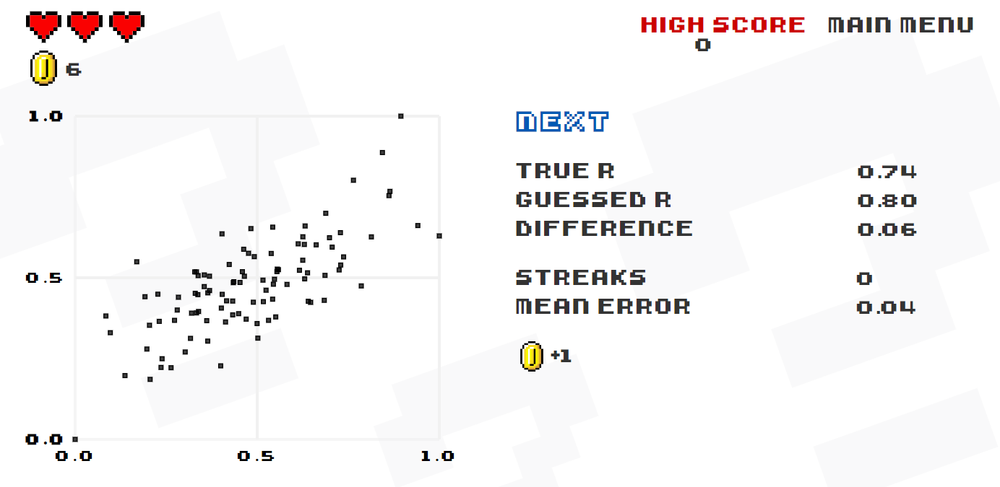

rng = np.random.default_rng(seed=313)
gen = lambda rho: rng.multivariate_normal([1, 1], [[1, rho], [rho, 1]], 100)
rhos = [-1, -0.8, -0.5, -0.2, 0, 0.2, 0.5, 0.8, 1]
arr = np.vstack([gen(rho) for rho in [-1, -0.8, -0.5, -0.2, 0, 0.2, 0.5, 0.8, 1]])
df = pd.DataFrame(
{
"rho": np.hstack([np.repeat(rho, 100) for rho in rhos]),
"x": arr[:, 0],
"y": arr[:, 1],
}
)
g = sns.lmplot(df, x="x", y="y", col = "rho",col_wrap=3, fit_reg=False)
g.set_axis_labels("", "")Correlation matrices and pair plots
Takeaways
- Know the basic properties of correlations and how to interpret them.
- Non-zero correlation does not imply causality, neither does causality imply non-zero correlation.
- Construct color-coded correlation matrices with Pandas.
- Use
pairplotto spot non-linearities and problems with the data. - Identify potential multicollinearity problems.
Correlation
- Definition of correlation.
- Measures linearity; Anscombe’s quartet.
Correlation and causality

Correlation
The correlation coefficient
Population definition
\[\textrm{Cor}(X,Y)=\frac{\textrm{Cov}(X,Y)}{\sqrt{\textrm{Var}(X)}\sqrt{\textrm{Var}(Y)}}\]
Sample definition
Properties
- \(-1 \leq \textrm{Cor}(X,Y)\leq 1\).
- \(\textrm{Cor}(X,Y) = 1\) if and only if \(Y=a+bX\) for some \(b>0\).
- \(\textrm{Cor}(X,Y) = -1\) if and only if \(Y=a+bX\) for some \(b<0\).
- \(\textrm{Cor}(X,Y) = 0\) when \(X\) and \(Y\) are independent.
When is a correlation large?
{kind=link}
It’s hard to distinguish the plots with correlations \(-0.2\), \(0\) and \(0.2\).

Improve your intuition by playing Guess the Correlation. 
So, what’s a large correlation, medium correlation, small correlation? The boring answer is that it depends both on the field and what we want to use the correlation for.
(Five examples here)
| Name | Field | Small | Medium | Large |
|---|---|---|---|---|
| Cohen | Psychology | $0.1 | \(0.3\) | \(0.5\) |
| Quintana | Heart rate variability | \(0.26\) | \(0.51\) | \(0.88\) |
In exploratory data analysis we often want to use the correlations as input into other models. Then we care mostly about removing correlations with very small (less than \(0.1\)). Perhaps surprisingly, we may also have to remove observations with very high correlations (e.g., higher than \(0.95\)), since they contain the same information about. Highly correlated features are called “multicollinear”, and cause the most common models such as logistic regression models and linear regression models to become unstable, and might
Correlation matrices
https://ggplot2.tidyverse.org/reference/diamonds.html
diamonds = sns.load_dataset("diamonds")
diamonds.head()| carat | cut | color | clarity | depth | table | price | x | y | z | |
|---|---|---|---|---|---|---|---|---|---|---|
| 0 | 0.23 | Ideal | E | SI2 | 61.5 | 55.0 | 326 | 3.95 | 3.98 | 2.43 |
| 1 | 0.21 | Premium | E | SI1 | 59.8 | 61.0 | 326 | 3.89 | 3.84 | 2.31 |
| 2 | 0.23 | Good | E | VS1 | 56.9 | 65.0 | 327 | 4.05 | 4.07 | 2.31 |
| 3 | 0.29 | Premium | I | VS2 | 62.4 | 58.0 | 334 | 4.20 | 4.23 | 2.63 |
| 4 | 0.31 | Good | J | SI2 | 63.3 | 58.0 | 335 | 4.34 | 4.35 | 2.75 |
diamonds.corr()ValueError: could not convert string to float: 'Ideal'diamonds.corr(numeric_only=True)| carat | depth | table | price | x | y | z | |
|---|---|---|---|---|---|---|---|
| carat | 1.000000 | 0.028224 | 0.181618 | 0.921591 | 0.975094 | 0.951722 | 0.953387 |
| depth | 0.028224 | 1.000000 | -0.295779 | -0.010647 | -0.025289 | -0.029341 | 0.094924 |
| table | 0.181618 | -0.295779 | 1.000000 | 0.127134 | 0.195344 | 0.183760 | 0.150929 |
| price | 0.921591 | -0.010647 | 0.127134 | 1.000000 | 0.884435 | 0.865421 | 0.861249 |
| x | 0.975094 | -0.025289 | 0.195344 | 0.884435 | 1.000000 | 0.974701 | 0.970772 |
| y | 0.951722 | -0.029341 | 0.183760 | 0.865421 | 0.974701 | 1.000000 | 0.952006 |
| z | 0.953387 | 0.094924 | 0.150929 | 0.861249 | 0.970772 | 0.952006 | 1.000000 |
diamonds.corr(numeric_only=True).style.background_gradient(cmap="coolwarm", axis=None)| carat | depth | table | price | x | y | z | |
|---|---|---|---|---|---|---|---|
| carat | 1.000000 | 0.028224 | 0.181618 | 0.921591 | 0.975094 | 0.951722 | 0.953387 |
| depth | 0.028224 | 1.000000 | -0.295779 | -0.010647 | -0.025289 | -0.029341 | 0.094924 |
| table | 0.181618 | -0.295779 | 1.000000 | 0.127134 | 0.195344 | 0.183760 | 0.150929 |
| price | 0.921591 | -0.010647 | 0.127134 | 1.000000 | 0.884435 | 0.865421 | 0.861249 |
| x | 0.975094 | -0.025289 | 0.195344 | 0.884435 | 1.000000 | 0.974701 | 0.970772 |
| y | 0.951722 | -0.029341 | 0.183760 | 0.865421 | 0.974701 | 1.000000 | 0.952006 |
| z | 0.953387 | 0.094924 | 0.150929 | 0.861249 | 0.970772 | 0.952006 | 1.000000 |
diamonds.corr(numeric_only=True).style.background_gradient(
cmap="coolwarm", axis=None, vmin=-1, vmax=1
).format(precision=2)| carat | depth | table | price | x | y | z | |
|---|---|---|---|---|---|---|---|
| carat | 1.00 | 0.03 | 0.18 | 0.92 | 0.98 | 0.95 | 0.95 |
| depth | 0.03 | 1.00 | -0.30 | -0.01 | -0.03 | -0.03 | 0.09 |
| table | 0.18 | -0.30 | 1.00 | 0.13 | 0.20 | 0.18 | 0.15 |
| price | 0.92 | -0.01 | 0.13 | 1.00 | 0.88 | 0.87 | 0.86 |
| x | 0.98 | -0.03 | 0.20 | 0.88 | 1.00 | 0.97 | 0.97 |
| y | 0.95 | -0.03 | 0.18 | 0.87 | 0.97 | 1.00 | 0.95 |
| z | 0.95 | 0.09 | 0.15 | 0.86 | 0.97 | 0.95 | 1.00 |
Anscombe’s quartet

- Figure 1. Looks like \(y_i = a + bx_i + \epsilon_i\), so we have linearity with noise. This is what we expect.
- Figure 2. Here it appears that \(y = a+bx+bx^2\), with no error. But the correlation can’t capture that, since it only measures deviations from linearity.
- Figure 3. There seems to be a perfectly linear relationship, but it is ruined by one observation. There is a possibility of data leakage here.
- Figure 4. Two categories, but only one observation in one of them. Are we dealing with an outlier again?
The pairplot function
sns.pairplot(diamonds){kind=link}
There are some outliers in
diamonds = sns.load_dataset("diamonds")
diamonds.drop(index=diamonds["z"].nlargest(1).index,inplace = True)
diamonds.drop(index=diamonds["y"].nlargest(5).index,inplace = True)
diamonds.drop(index=diamonds[diamonds["z"] == 0].index,inplace = True)
diamonds.drop(index=diamonds[diamonds["y"] == 0].index,inplace = True)
sns.pairplot(diamonds[["x", "y", "z"]]){kind=link}
plt.plot(diamonds["y"],smf.ols("carat ~ x*y*z", diamonds).fit().predict(), 'o')
plt.plot(diamonds["y"], diamonds["carat"], 'o'){kind=link}